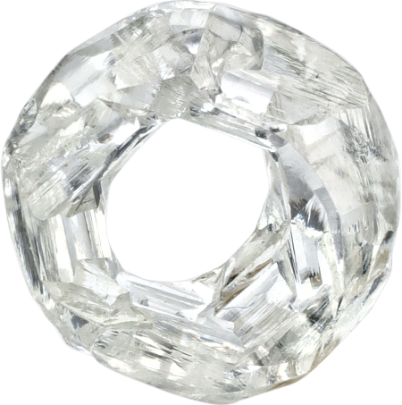
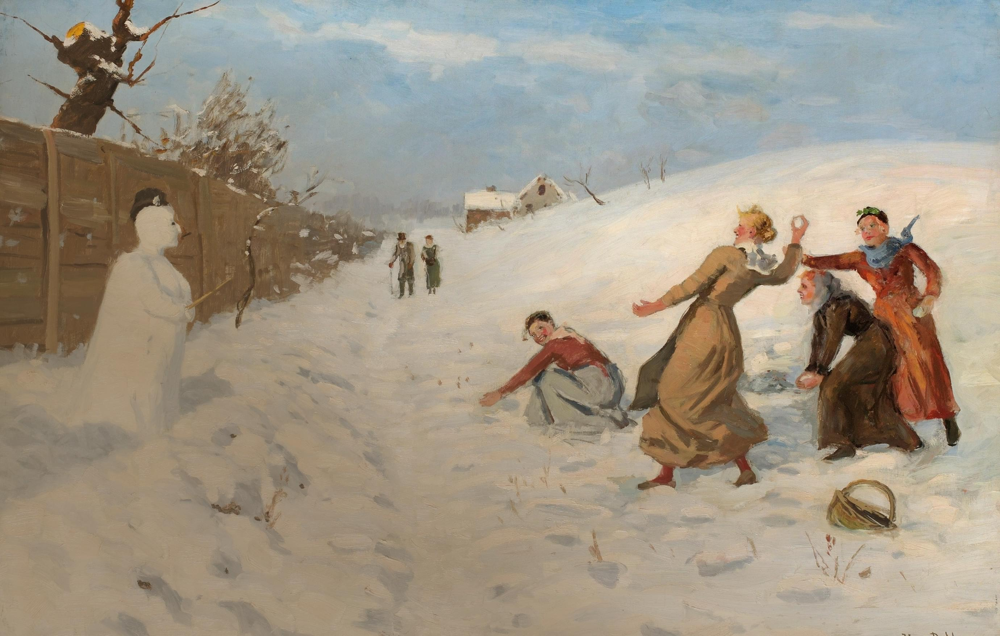

Вальтер Палмер.
Солнечный Делл. 1927
Мы решили, что незачем расставаться
со сказкой по прошествии новогодних
каникул, и составили календарь
сказочных алмазов из коллекции
АЛРОСА (заметим, что все они
существуют в реальности) накаждый
месяц года. Настроить воображение
поможет любимая многими с детства
сказка Самуила Маршака
«Двенадцать месяцев»*.
* В годы Первой мировой войны Самуил Маршак оказывал помощь беженцам
в приюте.
В послевоенное время приобрел первый педагогический опыт, участвовал
в организации
детского
образования.В Краснодаре создал один из первых в России детских
театров и писал для
него
пьесы. В начале 20-х годов выпустил первые стихотворные детские
книги. А «самую
новогоднюю
сказку» Самуил Яковлевич начал писать 80 лет назад. «Двенадцать
месяцев»
создавались
в военные годы – с 1942 по 1943 год. «Мне казалось, что в суровые
времена дети – да,
пожалуй,
и взрослые – нуждаются в веселом праздничном представлении, в
поэтической сказке…»
– писал Маршак о том времени.

Масса:
0,73 карата
Где добыто:
Архангельская область
Когда:
2021
Масса:
2,52 карата
Где добыто:
Архангельская область
Когда:
2021

Ханс Даль. Игра
в снежки и снеговик. 1937
Январь
«Буря, старшая сестра,
Ты раздуй огонь костра.
Стужа, средняя сестра,
Скуй котел из серебра –
Соки вешние варить,
Смолы летние курить...
А последнюю – зову
Метелицу-куреву.
Метелица-курева
Закурила, замела,
Запылила,завалила
Все дорожки, все пути –
Ни проехать, ни пройти!»
Масса:
10,99 карата
Где добыто:
Архангельская область
Когда:
2021